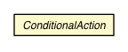

jsl.modeling
Class ConditionalAction

java.lang.Object
 jsl.modeling.ConditionalAction
jsl.modeling.ConditionalAction
- All Implemented Interfaces:
- Comparable<ConditionalAction>
public abstract class ConditionalAction
- extends Object
- implements Comparable<ConditionalAction>
| Methods inherited from class java.lang.Object |
clone, equals, finalize, getClass, hashCode, notify, notifyAll, toString, wait, wait, wait |
myPriority
private int myPriority
myId
private int myId
ConditionalAction
public ConditionalAction()
testCondition
public abstract boolean testCondition()
action
protected abstract void action()
setPriority
final void setPriority(int priority)
getPriority
public final int getPriority()
setId
final void setId(int id)
getId
public final int getId()
compareTo
public final int compareTo(ConditionalAction action)
- Returns a negative integer, zero, or a positive integer
if this object is less than, equal to, or greater than the
specified object.
Natural ordering: time, then priority, then order of creation
Lower time, lower priority, lower order of creation goes first
Throws ClassCastException if the specified object's type
prevents it from begin compared to this object.
Throws RuntimeException if the id's of the objects are the same,
but the references are not when compared with equals.
Note: This class may have a natural ordering that is inconsistent
with equals.
- Specified by:
compareTo in interface Comparable<ConditionalAction>
- Parameters:
event - The event to compare this event to
- Returns:
- Returns a negative integer, zero, or a positive integer
if this object is less than, equal to, or greater than the
specified object.
Copyright © 2012 Manuel D. Rossetti. All Rights Reserved.